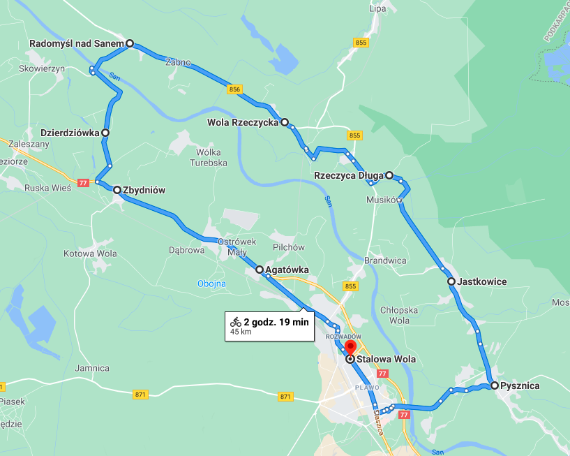

Trasa Rowerowa
Stalowa Wola
Pysznica
Jastkowice
Rzeczyca Długa
Wola Rzeczycka
Radomyśl nad Sanem
Dzierdziówka
Zbydniów
Agatówka
Trasa Wycieczki

Link do mapy
Trasa wycieczkie bedzie przebiegała przez 9 głównych miejscowości:
Stalowa Wola
Pysznica
Jastkowice
Rzeczyca Długa
Wola Rzeczycka
Radomyśl nad Sanem
Dzierdziówka
Zbydnów
Agatówka
Jej długość to 45 kilometry i zajmuje około 2 godziny i 19 minut.
Wszystkie miejscowości zostały opisane w pasku obok.